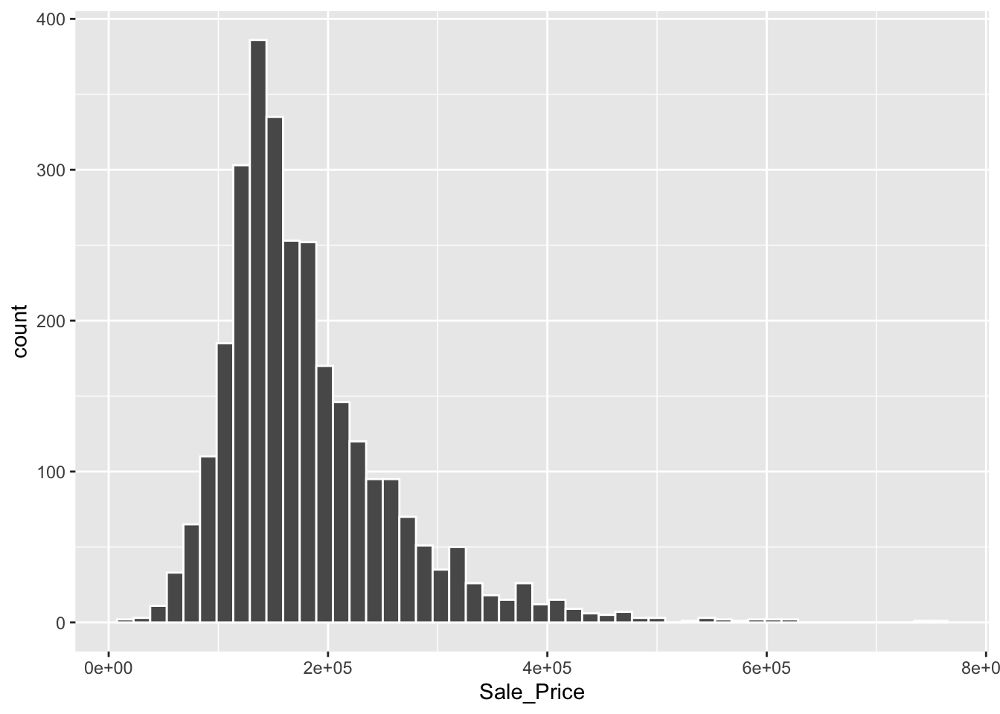
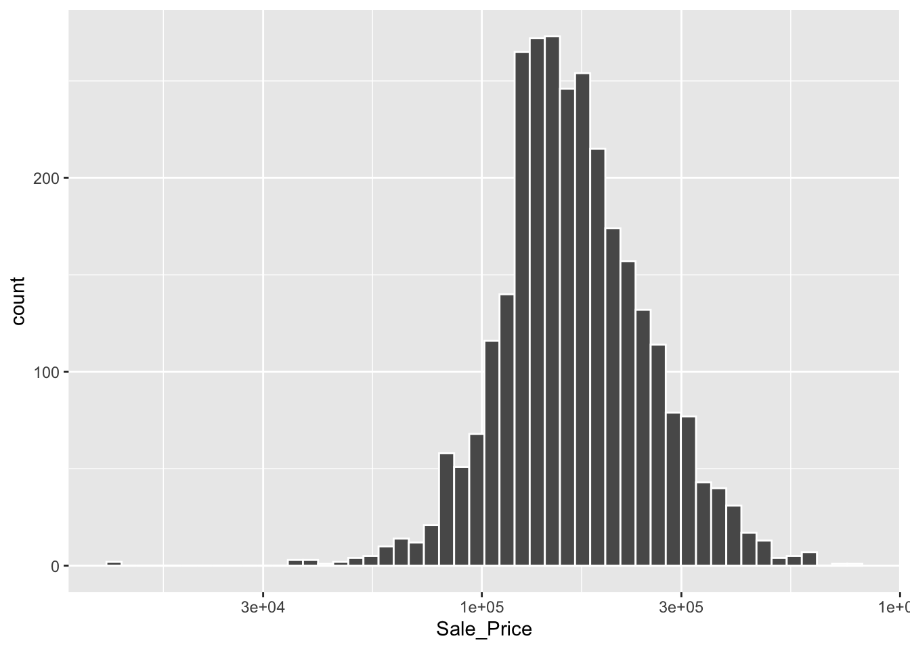

1 + 1[1] 2About this site
1 + 1[1] 2https://www.tmwr.org/
https://github.com/tidymodels/TMwR/

library(modeldata) # This is also loaded by the tidymodels package
library(tidymodels) # This is also loaded by the tidymodels package── Attaching packages ────────────────────────────────────── tidymodels 1.1.0 ──✔ broom 1.0.5 ✔ rsample 1.2.0
✔ dials 1.2.0 ✔ tibble 3.2.1
✔ dplyr 1.1.4 ✔ tidyr 1.3.1
✔ ggplot2 3.5.0 ✔ tune 1.1.2
✔ infer 1.0.4 ✔ workflows 1.1.3
✔ parsnip 1.1.0 ✔ workflowsets 1.0.1
✔ purrr 1.0.2 ✔ yardstick 1.2.0
✔ recipes 1.0.6 ── Conflicts ───────────────────────────────────────── tidymodels_conflicts() ──
✖ purrr::discard() masks scales::discard()
✖ dplyr::filter() masks stats::filter()
✖ dplyr::lag() masks stats::lag()
✖ recipes::step() masks stats::step()
• Use tidymodels_prefer() to resolve common conflicts.data(ames)
# or, in one line:
data(ames, package = "modeldata")
dim(ames)[1] 2930 74This plot shows us that the data are right-skewed; there are more inexpensive houses than expensive ones. The median sale price was $160,000, and the most expensive house was $755,000. When modeling this outcome, a strong argument can be made that the price should be log-transformed. The advantages of this type of transformation are that no houses would be predicted with negative sale prices and that errors in predicting expensive houses will not have an undue influence on the model. Also, from a statistical perspective, a logarithmic transform may also stabilize the variance in a way that makes inference more legitimate
ggplot(ames, aes(x = Sale_Price)) +
geom_histogram(bins = 50, col= "white")
scale_x_log10 transformed sales price:
ggplot(ames, aes(x = Sale_Price)) +
geom_histogram(bins = 50, col= "white") +
scale_x_log10()
The disadvantages of transforming the outcome mostly relate to interpretation of model results.
ames <- ames %>% mutate(Sale_Price = log10(Sale_Price))set.seed(501)
# Save the split information for Training 70%, Validation 20%,Testing 10%
ames_val_split <- initial_validation_split(ames, c(0.7,0.2))
ames_val_split<Training/Validation/Testing/Total>
<2051/586/293/2930>ames_train <- training(ames_val_split)
ames_test <- testing(ames_val_split)
ames_val <- validation(ames_val_split)linear_reg() %>% set_engine("lm") %>% translate()Linear Regression Model Specification (regression)
Computational engine: lm
Model fit template:
stats::lm(formula = missing_arg(), data = missing_arg(), weights = missing_arg())linear_reg(penalty = 1) %>% set_engine("glmnet") %>% translate()Linear Regression Model Specification (regression)
Main Arguments:
penalty = 1
Computational engine: glmnet
Model fit template:
glmnet::glmnet(x = missing_arg(), y = missing_arg(), weights = missing_arg(),
family = "gaussian")linear_reg() %>% set_engine("stan") %>% translate()Linear Regression Model Specification (regression)
Computational engine: stan
Model fit template:
rstanarm::stan_glm(formula = missing_arg(), data = missing_arg(),
weights = missing_arg(), family = stats::gaussian, refresh = 0)lm_model <-
linear_reg() %>%
set_engine("lm")lm_form_fit <-
lm_model %>%
# Recall that Sale_Price has been pre-logged
fit(Sale_Price ~ Longitude + Latitude, data = ames_train)lm_form_fitparsnip model object
Call:
stats::lm(formula = Sale_Price ~ Longitude + Latitude, data = data)
Coefficients:
(Intercept) Longitude Latitude
-306.069 -1.992 2.969 lm_xy_fit <-
lm_model %>%
fit_xy(
x = ames_train %>% select(Longitude, Latitude),
y = ames_train %>% pull(Sale_Price)
)lm_xy_fit parsnip model object
Call:
stats::lm(formula = ..y ~ ., data = data)
Coefficients:
(Intercept) Longitude Latitude
-306.069 -1.992 2.969 rand_forest(trees = 1000, min_n = 5) %>%
set_engine("ranger") %>%
set_mode("regression") %>%
translate()Random Forest Model Specification (regression)
Main Arguments:
trees = 1000
min_n = 5
Computational engine: ranger
Model fit template:
ranger::ranger(x = missing_arg(), y = missing_arg(), weights = missing_arg(),
num.trees = 1000, min.node.size = min_rows(~5, x), num.threads = 1,
verbose = FALSE, seed = sample.int(10^5, 1))trained model
lm_form_fit %>% tidy()# A tibble: 3 × 5
term estimate std.error statistic p.value
<chr> <dbl> <dbl> <dbl> <dbl>
1 (Intercept) -306. 16.0 -19.1 5.69e-75
2 Longitude -1.99 0.144 -13.9 8.07e-42
3 Latitude 2.97 0.198 15.0 1.89e-48lm_form_fit %>% predict(ames_test)# A tibble: 293 × 1
.pred
<dbl>
1 5.28
2 5.28
3 5.28
4 5.28
5 5.25
6 5.24
7 5.23
8 5.23
9 5.32
10 5.32
# ℹ 283 more rowsall_data = cbind(ames_test,predict(lm_form_fit, ames_test))glimpse(all_data)Rows: 293
Columns: 75
$ MS_SubClass <fct> One_Story_PUD_1946_and_Newer, One_Story_PUD_1946_an…
$ MS_Zoning <fct> Residential_Low_Density, Residential_Low_Density, R…
$ Lot_Frontage <dbl> 41, 39, 60, 75, 85, 21, 53, 24, 98, 110, 43, 76, 50…
$ Lot_Area <int> 4920, 5389, 7500, 10000, 10625, 1680, 4043, 2280, 1…
$ Street <fct> Pave, Pave, Pave, Pave, Pave, Pave, Pave, Pave, Pav…
$ Alley <fct> No_Alley_Access, No_Alley_Access, No_Alley_Access, …
$ Lot_Shape <fct> Regular, Slightly_Irregular, Regular, Slightly_Irre…
$ Land_Contour <fct> Lvl, Lvl, Lvl, Lvl, Lvl, Lvl, Lvl, Lvl, Lvl, HLS, L…
$ Utilities <fct> AllPub, AllPub, AllPub, AllPub, AllPub, AllPub, All…
$ Lot_Config <fct> Inside, Inside, Inside, Corner, Inside, Inside, Ins…
$ Land_Slope <fct> Gtl, Gtl, Gtl, Gtl, Gtl, Gtl, Gtl, Gtl, Gtl, Mod, G…
$ Neighborhood <fct> Stone_Brook, Stone_Brook, Gilbert, Gilbert, Northwe…
$ Condition_1 <fct> Norm, Norm, Norm, Norm, Norm, Norm, Norm, Norm, Nor…
$ Condition_2 <fct> Norm, Norm, Norm, Norm, Norm, Norm, Norm, Norm, Nor…
$ Bldg_Type <fct> TwnhsE, TwnhsE, OneFam, OneFam, OneFam, Twnhs, Twnh…
$ House_Style <fct> One_Story, One_Story, Two_Story, Two_Story, SFoyer,…
$ Overall_Cond <fct> Average, Average, Average, Average, Above_Average, …
$ Year_Built <int> 2001, 1995, 1999, 1993, 1974, 1971, 1977, 1978, 200…
$ Year_Remod_Add <int> 2001, 1996, 1999, 1994, 1974, 1971, 1977, 1978, 200…
$ Roof_Style <fct> Gable, Gable, Gable, Gable, Gable, Gable, Gable, Ga…
$ Roof_Matl <fct> CompShg, CompShg, CompShg, CompShg, CompShg, CompSh…
$ Exterior_1st <fct> CemntBd, CemntBd, VinylSd, HdBoard, Plywood, HdBoar…
$ Exterior_2nd <fct> CmentBd, CmentBd, VinylSd, HdBoard, Plywood, HdBoar…
$ Mas_Vnr_Type <fct> None, None, None, None, BrkFace, BrkFace, None, Non…
$ Mas_Vnr_Area <dbl> 0, 0, 0, 0, 81, 504, 0, 0, 200, 1095, 16, 0, 0, 0, …
$ Exter_Cond <fct> Typical, Typical, Typical, Typical, Typical, Typica…
$ Foundation <fct> PConc, PConc, PConc, PConc, CBlock, CBlock, CBlock,…
$ Bsmt_Cond <fct> Typical, Typical, Typical, Typical, Typical, Typica…
$ Bsmt_Exposure <fct> Mn, No, No, No, Gd, No, No, No, No, Gd, No, No, No,…
$ BsmtFin_Type_1 <fct> GLQ, GLQ, Unf, Unf, GLQ, Rec, ALQ, ALQ, GLQ, GLQ, G…
$ BsmtFin_SF_1 <dbl> 3, 3, 7, 7, 3, 6, 1, 1, 3, 3, 3, 3, 2, 7, 1, 5, 4, …
$ BsmtFin_Type_2 <fct> Unf, Unf, Unf, Unf, LwQ, Unf, Unf, Unf, Unf, Unf, U…
$ BsmtFin_SF_2 <dbl> 0, 0, 0, 0, 168, 0, 0, 0, 0, 0, 0, 0, 119, 0, 121, …
$ Bsmt_Unf_SF <dbl> 722, 415, 994, 763, 0, 327, 709, 544, 486, 1473, 12…
$ Total_Bsmt_SF <dbl> 1338, 1595, 994, 763, 1053, 483, 1069, 855, 1704, 2…
$ Heating <fct> GasA, GasA, GasA, GasA, GasA, GasA, GasA, GasA, Gas…
$ Heating_QC <fct> Excellent, Excellent, Good, Good, Typical, Typical,…
$ Central_Air <fct> Y, Y, Y, Y, Y, Y, Y, Y, Y, Y, Y, Y, Y, Y, Y, Y, Y, …
$ Electrical <fct> SBrkr, SBrkr, SBrkr, SBrkr, SBrkr, SBrkr, SBrkr, SB…
$ First_Flr_SF <int> 1338, 1616, 1028, 763, 1173, 483, 1069, 855, 1704, …
$ Second_Flr_SF <int> 0, 0, 776, 892, 0, 504, 0, 601, 0, 0, 0, 1128, 0, 0…
$ Gr_Liv_Area <int> 1338, 1616, 1804, 1655, 1173, 987, 1069, 1456, 1704…
$ Bsmt_Full_Bath <dbl> 1, 1, 0, 0, 1, 0, 0, 0, 1, 1, 0, 1, 0, 0, 1, 0, 1, …
$ Bsmt_Half_Bath <dbl> 0, 0, 0, 0, 0, 0, 0, 0, 0, 0, 0, 0, 0, 0, 0, 0, 0, …
$ Full_Bath <int> 2, 2, 2, 2, 2, 1, 2, 2, 2, 2, 2, 2, 2, 2, 1, 2, 2, …
$ Half_Bath <int> 0, 0, 1, 1, 0, 1, 0, 1, 0, 1, 0, 1, 0, 0, 0, 0, 1, …
$ Bedroom_AbvGr <int> 2, 2, 3, 3, 3, 2, 2, 3, 3, 3, 2, 4, 2, 2, 2, 4, 4, …
$ Kitchen_AbvGr <int> 1, 1, 1, 1, 1, 1, 1, 1, 1, 1, 1, 1, 1, 1, 1, 2, 1, …
$ TotRms_AbvGrd <int> 6, 5, 7, 7, 6, 5, 4, 7, 7, 10, 6, 8, 5, 5, 4, 8, 9,…
$ Functional <fct> Typ, Typ, Typ, Typ, Typ, Typ, Typ, Typ, Typ, Typ, T…
$ Fireplaces <int> 0, 1, 1, 1, 2, 0, 1, 1, 1, 2, 1, 0, 1, 1, 0, 0, 1, …
$ Garage_Type <fct> Attchd, Attchd, Attchd, Attchd, Attchd, Detchd, Att…
$ Garage_Finish <fct> Fin, RFn, Fin, Fin, RFn, Unf, RFn, Unf, RFn, Fin, F…
$ Garage_Cars <dbl> 2, 2, 2, 2, 2, 1, 2, 2, 3, 3, 2, 2, 1, 1, 1, 2, 3, …
$ Garage_Area <dbl> 582, 608, 442, 440, 528, 264, 440, 440, 772, 958, 4…
$ Garage_Cond <fct> Typical, Typical, Typical, Typical, Typical, Typica…
$ Paved_Drive <fct> Paved, Paved, Paved, Paved, Paved, Paved, Paved, Pa…
$ Wood_Deck_SF <int> 0, 237, 140, 157, 0, 275, 0, 26, 0, 220, 146, 0, 80…
$ Open_Porch_SF <int> 0, 152, 60, 84, 120, 0, 55, 0, 50, 150, 20, 45, 0, …
$ Enclosed_Porch <int> 170, 0, 0, 0, 0, 0, 0, 0, 0, 0, 0, 0, 0, 0, 0, 0, 0…
$ Three_season_porch <int> 0, 0, 0, 0, 0, 0, 0, 0, 0, 0, 0, 0, 0, 0, 0, 0, 0, …
$ Screen_Porch <int> 0, 0, 0, 0, 0, 0, 165, 0, 0, 0, 144, 0, 0, 0, 90, 0…
$ Pool_Area <int> 0, 0, 0, 0, 0, 0, 0, 0, 0, 0, 0, 0, 0, 0, 0, 0, 0, …
$ Pool_QC <fct> No_Pool, No_Pool, No_Pool, No_Pool, No_Pool, No_Poo…
$ Fence <fct> No_Fence, No_Fence, No_Fence, No_Fence, Minimum_Pri…
$ Misc_Feature <fct> None, None, None, None, None, None, None, None, Non…
$ Misc_Val <int> 0, 0, 0, 0, 0, 0, 0, 0, 0, 0, 0, 0, 0, 0, 0, 0, 0, …
$ Mo_Sold <int> 4, 3, 6, 4, 1, 2, 7, 7, 5, 6, 4, 1, 5, 4, 2, 4, 6, …
$ Year_Sold <int> 2010, 2010, 2010, 2010, 2010, 2010, 2010, 2010, 201…
$ Sale_Type <fct> WD , WD , WD , WD , WD , COD, WD , WD , WD , WD , W…
$ Sale_Condition <fct> Normal, Normal, Normal, Normal, Family, Normal, Nor…
$ Sale_Price <dbl> 5.329398, 5.373831, 5.276462, 5.245266, 5.230449, 4…
$ Longitude <dbl> -93.63379, -93.63285, -93.63907, -93.63695, -93.636…
$ Latitude <dbl> 42.06298, 42.06112, 42.05919, 42.05848, 42.05027, 4…
$ .pred <dbl> 5.284678, 5.277290, 5.283948, 5.277608, 5.252088, 5…lm_wflow <-
workflow() %>%
add_model(lm_model) %>% add_formula(Sale_Price ~ Longitude + Latitude)
lm_wflow══ Workflow ════════════════════════════════════════════════════════════════════
Preprocessor: Formula
Model: linear_reg()
── Preprocessor ────────────────────────────────────────────────────────────────
Sale_Price ~ Longitude + Latitude
── Model ───────────────────────────────────────────────────────────────────────
Linear Regression Model Specification (regression)
Computational engine: lm 1.Hyperparameter tuning using tidymodels
https://www.youtube.com/watch?v=muf3-hrahHs
2.Tuning XGBoost using tidymodels
https://www.youtube.com/watch?v=hpudxAmxHSM
3.Tune xgboost more efficiently with racing methods
https://www.youtube.com/watch?v=_e0NFIaHY2c
4.Boost Model Performance with Hyperparameter Tuning in R | Tidymodels:
https://www.youtube.com/watch?v=IzjmuGJgwKQ